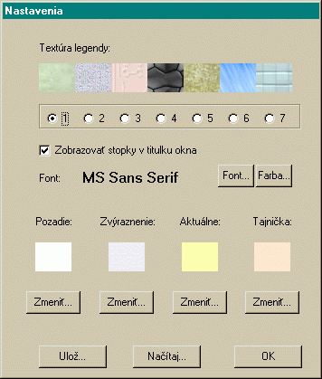

Ovládanie programu je intuitívne. V menu krí�ovka sa nachádzajú základné funkcie pre naèítanie a ulo�enie do súboru. Ak si krí�ovku ulo�íme, uchováme si tak rozpracované riešenie, ku ktorému sa mô�eme neskôr vráti�.
Po naèítaní krí�ovky sa nám krí�ovka zobrazí v okne
programu. Legendy k slová sú na 'zeleno-mramorovom' prípadne inom podklade.
Tajnièky sú od bielych políèok oddelené farebne. Jedno políèko je zvırazné
a s ním aj celé slovo, v ktorom sa nachádza.
V krí�ovke sa dá pohybova� pomocou šípiek alebo pomocou myši. Písmená zapisujeme priamo, v�dy do aktívneho políèka a teda mô�eme zapísa� aj naraz celé slovo. Za titulkom okna sa zobrazuje èas od zaèatia riešenia krí�ovky. Viac o samotnom riešení a o pomôckach, keï si nevieme rady na stránke Riešenie krí�ovky... Okrem samotného riešenia predtım pripravenıch krí�oviek je tu mo�nos� efektívne si nové krí�ovky vytvára�. Viac na stránke Navrhovanie krí�oviek...
Nastavenie parametrov
Aplikácia má preddefinované základné parametre, ktoré však mô�eme pod¾a
¾ubovôle meni�. Jednotlivé konfigurácie je mô�né odklada� a naèítava�
zo súborov, a tak je tu mo�nos� prispôsobenia jednotlivı pou�ívate¾om.
K tımto funkciám sa dostaneme cez Krí�ovka|Naèítaj nastavenie... a Krí�ovka|Ulo�j
nastavenie... alebo priamo pomocou tlaèidiel v okne Nastavenia,
ku ktorému sa dostaneme buï cez menu Krí�ovka alebo stlaèením Ctrl-N.
Okno Nastavenia
V tomto okne meníme vizuálne vlastnosti programu:
- textúra legendy - na vıber je nieko¾ko textúr. Tvoria pozadie pre prázdne políèka a políèka s legendou
- zobrazova� stopky v titulku okna - ak je táto vo¾ba zaškrtnutá, tak sa v re�ime riešenia, poèíta èas od zaèiatku riešenia
- zmena fontu - mení typ a vlastnosti fontu pou�ívaného na zobrazenie písmen krí�ovky
- zmena farby fontu - mení farbu fontu pou�ívaného na zobrazenie písmen krí�ovky
- pozadie - nastavenie farby pozadia písmen krí�ovky
- zvıraznenie - nastavenie farby políèok zvırazneného slova
- aktuálne - nastavenie farby aktuálneho políèka
- tajnièka - nastavenie farby políèok tajnièky
Ukonèenie zmien a ich uplatnenie vykonáme tlaèidlok OK.
